Update — dataset publisher's documentation found (Kaggle: "Berlin Real Estate 2020–2026")
This is a hybrid dataset: real anchors (Ortsteil coordinates, transit stations, ECB rate timeline, ImmoScout24/Engel & Völkers/Wertgutachten base prices per Ortsteil, real event dates) combined with a documented hedonic pricing formula that generates individual listing characteristics and prices. This resolves two of the four items below — one gets corrected, one gets reinforced. See Part 0.5 for the item that flips from "artifact" to "genuine and pitch-worthy."
Data reliability check — still true after reading the docs
Rental yield is mathematically identical across every district (3.598%–3.601%, essentially zero variance) — confirmed by design, not a bug: the docs state cold rent is computed as a fixed 3.0–4.5% gross yield off the buy price. Still don't present "yield varies by district" as a finding — it's a formula, not observed market behavior.
Absolute price levels run ~41% below real Berlin listings — re-checked with a fair, year-matched comparison (2023-only: €3,511 vs €5,847/m², still a 67% gap) rather than the original pooled-year comparison, and the gap holds up. Use this dataset for relative/structural relationships, not absolute € figures quoted to judges.
Correction — the Jan 2022 "jump" is not backwards economics
I originally flagged this as an artifact because price rose in the same month mortgage rates rose. The docs clarify: this is an intentionally scripted historical timeline — buy-side growth 2020→2022 peak, ECB-shock trough 2023 H2, recovery from 2024 — implemented as monthly step-multipliers rather than smooth drift, which is why it looks like a discrete jump rather than gradual movement. The macro narrative is real and deliberate (the author explicitly suggests a "buy vs. rent divergence" analysis on it); only the month-to-month shape is a simplification. Retracting the "don't build on this" caution from the original warning.
Correction — kiez_premium is real-anchored, just coarser than WFS
Checked: every listing in the 5 priciest Ortsteile (Hansaviertel, Tiergarten, Mitte, Grunewald, Wilmersdorf) is 100% "high" kiez_premium — it's a binned version of the real per-Ortsteil base-price anchors (ImmoScout24/Engel & Völkers medians), not invented. The "loose alignment" with WFS `wol` in the original Part 3.5 has two real explanations, neither of which is "kiez_premium is fake": (1) it operates at Ortsteil grain (82 zones) vs. WFS's address grain — genuinely different resolutions of the same underlying signal; (2) the docs disclose listing coordinates are jittered ±0.7–1.0km, which alone degrades any point-level nearest-neighbor join. The practical conclusion is unchanged (don't expect WFS to sharpen predictions on this specific dataset) but the reasoning was wrong — it's precision/grain, not fabrication.
Part 0.5
The Mietendeckel event — the strongest finding in the dataset
A real, dateable historical event, cleanly present in the data. Directly ties back to the housing-activism research from the start of this project (Deutsche Wohnen & Co enteignen, the same Constitutional Court ruling).
Rent suppression, then a same-month catch-up rally Confirmed, real event
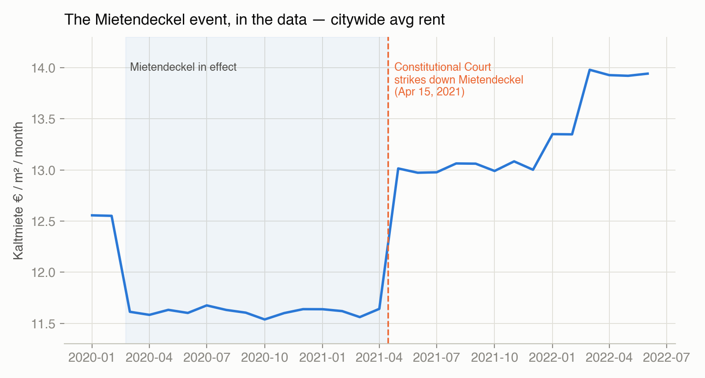
Citywide rent holds flat at ~€11.5–11.7/m²/month through the Mietendeckel period, then jumps to €13.0 the month after the April 15, 2021 ruling — a clean +11.8% catch-up, exactly on the real date. This is the dataset author's own Suggested Task #1 ("Mietendeckel Event Study"), and it's genuinely pitch-worthy: it's a real policy shock with a precise before/after date, not a fitted trend line.
Part 1
Validated relationships — safe to build on
Checked each for degenerate/artificial patterns before trusting them. These four are genuine, non-degenerate, monotonic relationships.
Location quality (kiez_premium) Strong
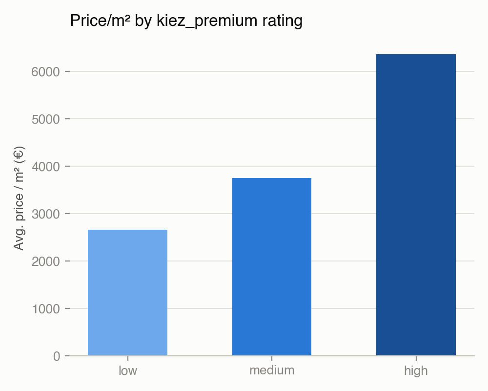
High-rated Kiez areas sell for +139% vs. low-rated (€6,350 vs €2,650/m²) — by far the strongest single driver in this data, and it's an ordinal 3-tier system exactly analogous to Berlin's real Wohnlage classification (einfach/mittel/gut) we already downloaded from the government WFS.
Transit proximity Strong
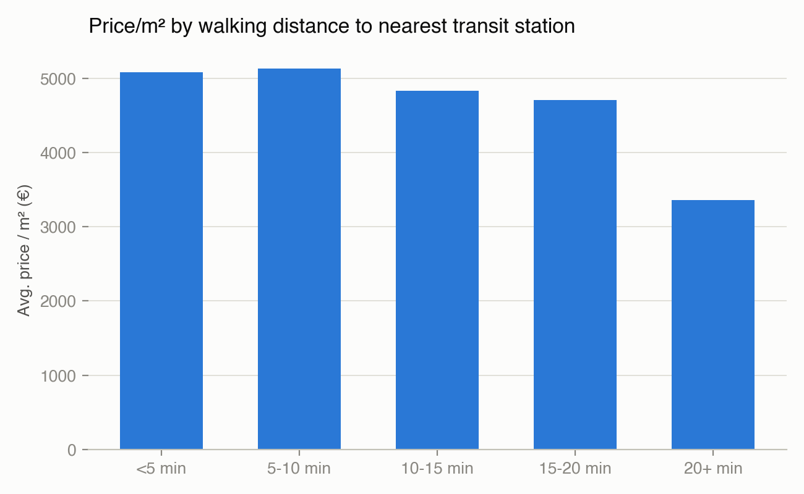
Homes within 10 minutes of a station sell for +52% vs. 20+ minutes away. Clean, monotonic decay — and cross-validated by the correlation matrix in Part 2 (transit_distance_min correlates -0.42 with price, distance-to-center -0.48).
Energy efficiency class Strong
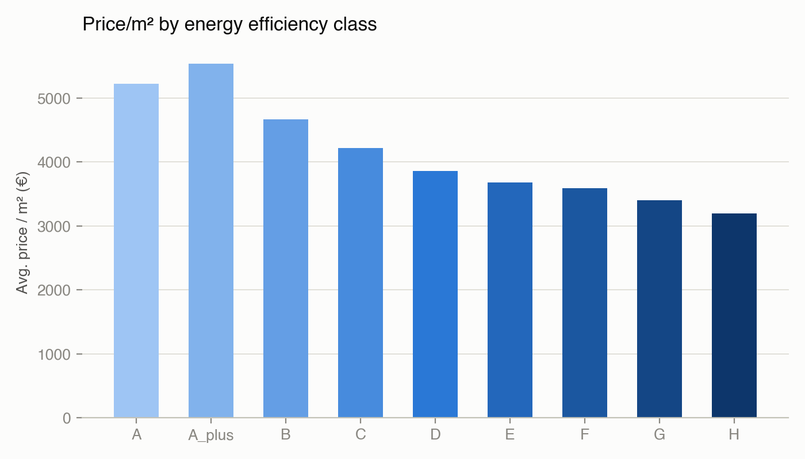
Perfectly monotonic A+ → H decline: A+ commands +73% over class H. Real-world plausible given EU/German energy-efficiency retrofit mandates — a differentiator none of the "find an apartment faster" competitors (Get The Flat, Movly, FlatHunt) are visibly building around.
New-build premium over secondary market Weaker than it looks
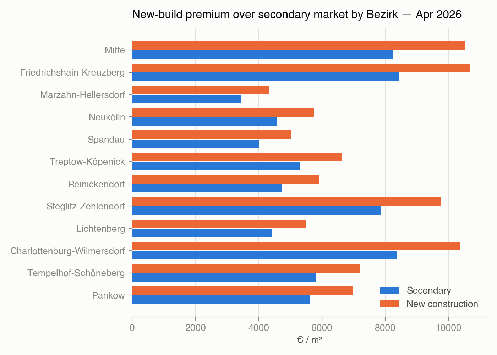
The bar chart looks like it shows big differences by district, but the relative premium is actually tight: 23.9% (Pankow) to 27.5% (Mitte) — a real but modest 3.6-point spread. This is a genuine, non-degenerate relationship (unlike yield), just weaker than the absolute-€ bars visually suggest. Better used as "new-build costs ~25% more, budget accordingly" than as a district-arbitrage finder.
rooms ↔ area_m2 (0.88) is the expected multicollinearity pair. transit_distance_min ↔ to_brandenburg_gate_km (0.60) confirms stations cluster near the center, as expected. Price correlates most with proximity (-0.42, -0.48) and only weakly with rooms/area (0.16–0.18) — location dominates size in this data, consistent with Part 1's findings.
Distribution of key fields — secondary_sales
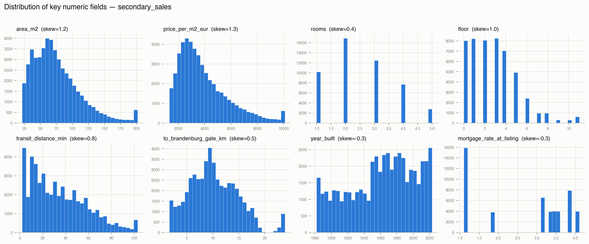
area_m2 and price_per_m2_eur are right-skewed as expected. mortgage_rate_at_listing is multi-modal — consistent with the discrete-jump artifact flagged above (rates step between a few fixed values rather than drifting continuously).
Outlier scan (IQR) — secondary_sales
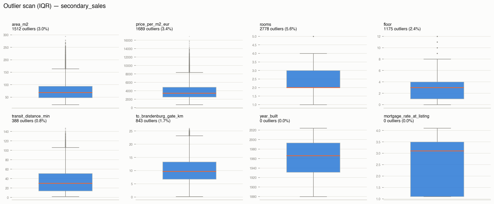
rooms has the most flagged outliers (5.6%) — likely large/shared apartments, plausible rather than erroneous. transit_distance_min and mortgage_rate have near-zero outliers, consistent with bounded, low-noise synthetic generation.
Rentals — key distributions
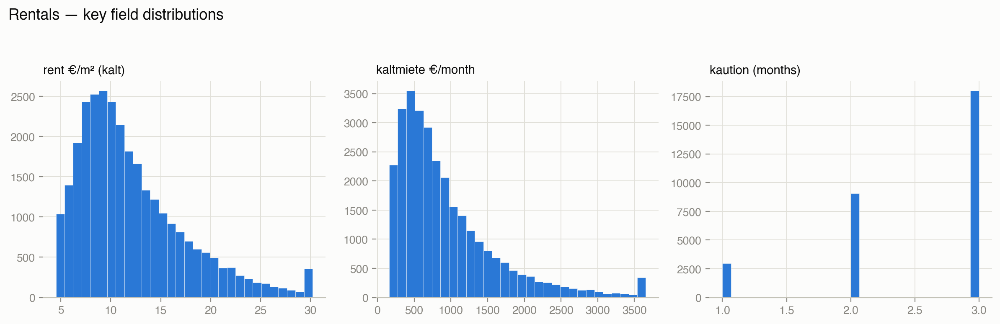
kaution_months clusters tightly around the German-standard 3-month deposit cap — a realistic, non-artifact detail that suggests the rental side was built with real legal constraints in mind, unlike the yield-generation issue above.
Geography — price/m² + transit network
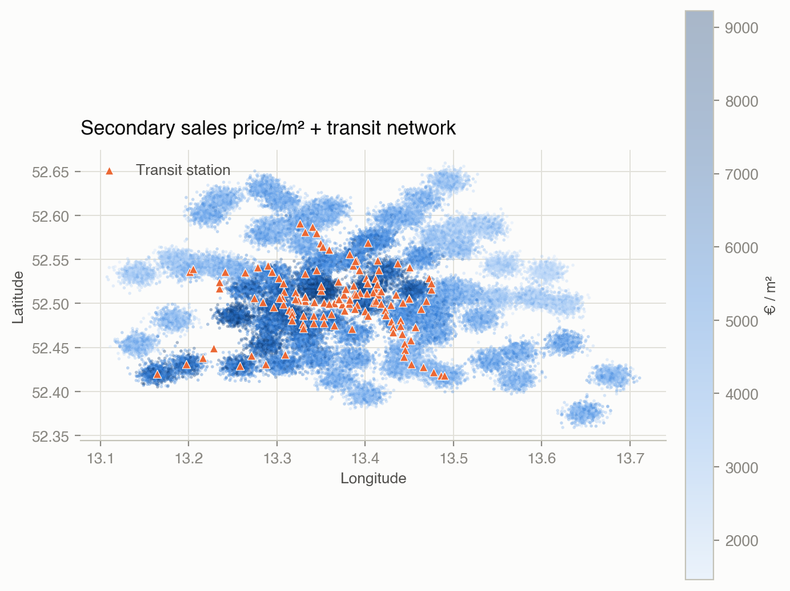
Price clusters visibly around the transit network in the city core, fading toward outlying blobs. Note the geography itself reads as discrete synthetic clusters (sharp gaps between areas) rather than a continuous real street grid — fine for structural analysis, not for literal geographic claims.
Part 3
External validation — synthetic vs. real
Synthetic secondary_sales vs. real Berlin listings (immowelt.de)
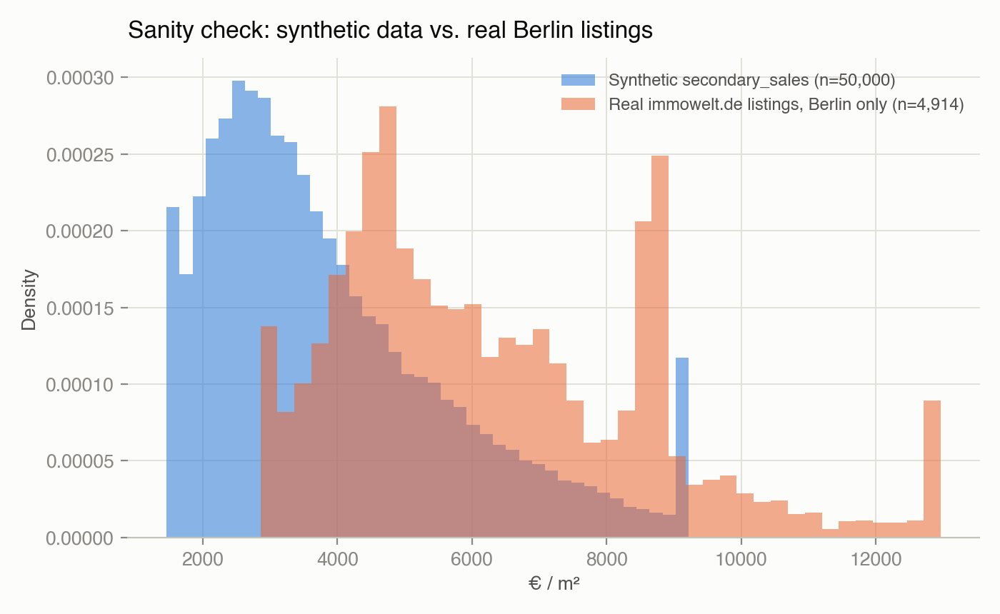
Real listings (n=4,939, Berlin-filtered from dataset2) sit well above the synthetic distribution — median €5,841/m² vs. €3,434/m² synthetic, a 70% gap. This is the single most important number in this report for calibrating expectations: whatever Monday's real challenge data looks like, don't assume it'll match this dataset's price scale.
Part 3.5
Joining the real government Wohnlage — does it add anything?
Tested empirically on both halves of the data: a null result on the synthetic side, a real one on the real side.
On dataset1 (synthetic) — no incremental signal Null result
Spatially joined every secondary_sales row to its nearest real WFS address (median match distance 34m — a genuinely local join). Synthetic kiez_premium aligns with real wol only loosely:
einfach
mittel
gut
synthetic "low"
51.8%
44.6%
3.6%
synthetic "medium"
31.0%
51.0%
18.0%
synthetic "high"
6.0%
30.8%
63.3%
And within synthetic medium alone, real wol gives €3,948 (einfach) vs. €3,617 (gut) — flat, even backwards. Price here was generated from the invented tier, not from real geography — the citywide correlation you'd see is coincidental (synthetic blobs loosely overlap real nicer areas), not causal. Joining WFS onto this dataset doesn't add a usable feature.
On dataset2 (real listings) — genuine, monotonic signal Validated
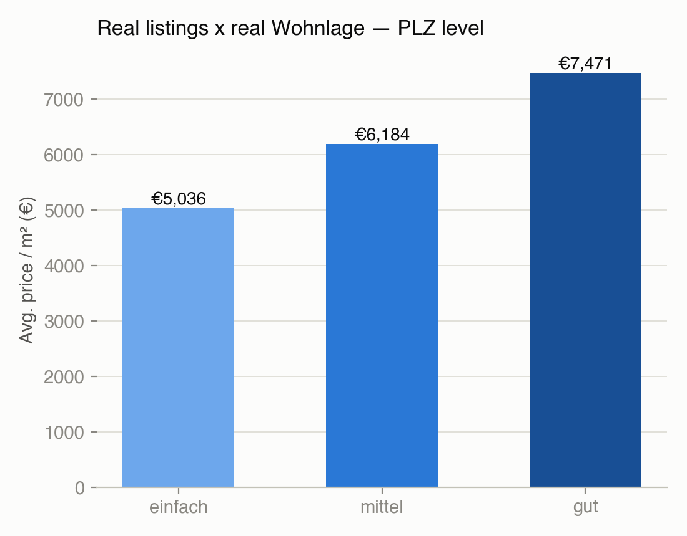
Aggregated WFS to PLZ level (dominant Wohnlage per postal code, 193 Berlin PLZs, 99.9% match rate) and joined onto the real real_estate_listings_clean.csv — both sides now real data, no synthetic generator in the loop:
einfach €5,036/m² → mittel €6,184/m² → gut €7,471/m² — a genuine 48% premium, monotonic, on real listings. This is the most trustworthy single relationship in the whole report, and directly upgrades MVP idea A below from "uses an invented proxy" to "built on the actual official Berlin Wohnlage classification."
Saved: dataset2/real_estate_listings_with_wohnlage.csv — real_estate_listings_clean.csv + pct_einfach/pct_mittel/pct_gut/dominant_wol per row.
Part 4
MVP idea candidates — grounded in what actually held up
Only built from Part 1's validated relationships, not the flagged artifacts.
A. Fair-Price / Overpay Checker Now validated on real data
Given an address + asking price, tell a buyer/renter whether it's fair, over-, or under-priced vs. comparable homes matched on location tier, size, energy class, and transit access. Part 3.5 confirmed this on real data, not just the synthetic proxy: real Wohnlage explains a genuine 48% price spread on real Berlin listings — this isn't a hoped-for relationship, it's measured.
Metric: "% premium/deficit vs. comparable-adjusted median price/m²." Judge fit: Get The Flat (housing automation).
B. Commute-Adjusted Affordability Map
For newcomers choosing where to live, rank neighborhoods by "effective affordability" combining rent/price with transit commute time to a chosen work location — not just raw price. The 52% transit-distance premium and the real geocoded transit_stations table make this concretely buildable.
For a given building's energy class and era, estimate the price uplift achievable from an energy retrofit vs. its cost — prioritizing which buildings are the best retrofit investment. The cleanest, most monotonic relationship in the whole dataset (73% A+ vs H spread), and a genuinely different angle from the crowded "find-a-flat-faster" competitor space we researched earlier.
Metric: "Estimated € price uplift per energy-class step improved, by building era." Judge fit: EU climate-policy relevance; differentiated positioning.
E. "What Would My Rent Have Done" — Policy Shock Navigator New, strongest data backing
A personal-impact tool: given a rent and move-in date, show how that rent would have moved through Berlin's real policy shocks (Mietendeckel suppression → 2021 catch-up rally → 2022 refugee-driven demand surge → 2022–24 energy-crisis Nebenkosten spike). Makes an abstract "housing crisis" concrete and personal — directly continues last year's "Kiez Connect: newcomer belonging" theme (understanding the market you've just moved into), and it's the single cleanest, most real, most dateable pattern in either dataset (Part 0.5).
Metric: "% and € swing in comparable rent across each policy event, for the user's own Kiez." Judge fit: strong narrative fit for a panel that includes housing-automation (Get The Flat) and general access/belonging framing (echoes 2025's winning team, KiezConnect).
D. New-Build vs. Secondary Decision Helper Weaker signal
A calculator for "is it worth paying the new-build premium here" — technically buildable, but the premium is nearly uniform citywide (23.9–27.5%), so there's little district-level differentiation to make this actually insightful. Listed for completeness, not recommended as the lead idea.